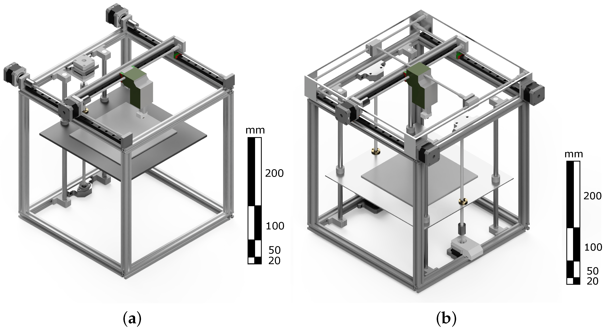

Imprimante 3D CoreXY
Sistemul CoreXY utilizează o cinematică specială în care mișcarea pe axele X și Y este controlată simultan de două curele încrucișate și doua motoare.

Principiul de funcționare:
- Mișcarea pe axele X și Y este rezultatul unei combinații de rotații ale motoarelor.
- Volumul de imprimare este o prismă rectangulară, dar designul permite mai multă compactare.
Avantaje:
- Viteză mare și precizie.
- Design rigid: Cadrele CoreXY sunt de obicei din profile din aluminiu.
- Mișcare sincronizată: Distribuția uniformă a sarcinii pe motoare reduce uzura mecanică.
Dezavantaje:
- Configurație complicată: Sistemul de curele încrucișate necesită calibrare precisă.
- Cost mai mare.
- Software mai complex.
Exemple populare:
- Voron 2.4: Proiect DIY pentru utilizatori avansați.
- BLV MGN Cube: Un design modular și performant.